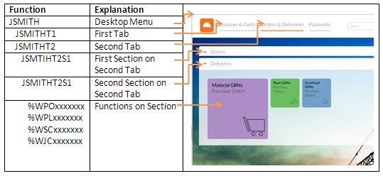

This page explains how to configure users' desktops.
Desktop Structure
The desktop is built using a menu structure:
- The top level menu is the desktop itself.
- The second level contains one or more menus which correspond to the tabs on the desktop.
- Each tab menu contains one or more menu functions which correspond to the collapsible sections on the desktop.
- The menu items on the section menu correspond to the tiles.
If users configure their own desktop, creates tab functions with the same code as the top-level menu, but with T1, T2 etc at the end; for example: JSMITHT1, JSMITHT2, and sections with the same code as the tab, but with S1, S2 etc at the end; for example: JSMITHT1S1, JSMITHT1S2.

Ownership of Desktops
A desktop belongs to a user if the menu, tab and section codes begin with the code specified in the Desktop field on that user's user record. A user can modify a desktop which belongs to them.
A desktop can belong to more than one user (that is, if they all have the same desktop code specified on their user record), in which case each user can modify the desktop, and all the other users will see the changes.
If a desktop contains components (for example, tabs or sections) which do not begin with the code specified on the user record, the user will not be able to modify those components. This means you can configure and maintain standard desktop components that users cannot change.
Desktop Configuration - Alternatives
You have various alternatives, depending on how much control you want to give users over their own desktops. For example:
- You can allow each user to configure their own desktop from scratch.
- You can set up standard desktops that can be assigned to the appropriate users.
- You can set up templates that users can copy to use as a starting point for configuring their own desktop.
- You can give several users access to the same desktop, but use function security to control who can modify it.
To configure a desktop:
- In Function Maintenance, if the desktop does not already exist, create a new menu function for the top-level desktop menu. Set the Type set to Menu.
- Create menu functions for each tab on the desktop. Set the Type to Desktop Tab.
- Add these tab functions as Menu Items on the top-level desktop menu.
- Create menu functions for each section on the tabs. Set the Type to Desktop Section.
- Add these section functions as Menu Items on the tab functions.
- On the section menu, add the functions that each tile will run. Choose how you want the tile to be displayed (for example, the title, and size).
If available, you can also choose values to display on the tile (such as the number of new items or the total value of invoices).
- You can also include the contents of other sections. This allows you to maintain standard sets of functions independently and add them as a common component to users' desktops. Enter the code of the section menu as a menu item on the section where you want to include it; the tiles on the included section will appear on the desktop as if they had been added individually.
If you have existing Desktops that were set up before v11.04 of , the Type on the tab functions and section functions will not be correct. These functions will still work, but will not appear in the relevant lookups, therefore you should use Function Maintenance to change the Type field on these functions to Desktop Tab or Desktop Section.
To configure a desktop template:
If you want users to be able to select a desktop to use as a template for creating their own desktop, it must belong to a user ID (because the Desktop Setup Wizard only allows users to copy another user's desktop). So you need to set up a desktop, and either assign the desktop to an existing user, who will be the owner of the desktop, or create a user record (which does not need to be a named user) to be a "template user" and assign the desktop to that user ID.
When a user copies another user's desktop, copies the desktop structure using the desktop code that is assigned to the user who is copying. If the original desktop contains tabs or sections that do not belong to the original user, they are also copied but the new user will not be able to modify them.
To give a user access to a desktop:
- In Users, open the user record.
- In the Current Desktop field on the Preferences tab, enter the code for the top-level desktop menu for this user. This could be same as the user's user ID, but it does not have to be.
- If the code is for a desktop menu that already exists, when the user next logs in they will see that desktop.
- If the code is for a desktop menu that does not exist, the user will have an empty desktop and will be able to configure it themselves using the Desktop Setup Wizard. They can copy a desktop from another user.
- Save the user record.
If the desktop menu does not already exist, creates an empty desktop menu automatically.
- If the user has a user home page set up, they will see that home page when they log in to , but they will still be able to display the desktop.
- Unless you prevent them (using function access permissions - see below), all users that have the same desktop can modify that desktop and will all see each others' changes.
Function Access
If you do not want users to be able to modify the content of their desktop, do not give them access to:
- The User Preferences Desktop tab: %WSY2581SSUR.
- The Desktop Item Maintenance function: %WSY2582BMSI.
- The Desktop Tab Maintenance function: %WSY2583BMSI.
- The Desktop Section Maintenance function: %WSY2584BMSI.
Users will still be able to select their desktop background image.
If you do not want users to be able to add functions to their desktop from the History menu, do not give them access to the Add to Desktop function (%WSY2583FMSI).